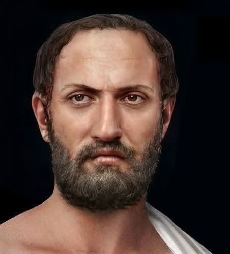

01

Herodotus
Ama ng KasaysayanAng kasaysayan ay pagsasalaysay at pagsisiyasat ng mga pangyayari sa nakaraan.

Pag-unawa sa nakaraan upang mas maunawaan ang kasalukuyan at ang hinaharap.
Iba't ibang historyador ang nagbigay ng mahahalagang pananaw tungkol sa kahulugan at pag-aaral ng kasaysayan.
Ang kasaysayan ay pagsasalaysay at pagsisiyasat ng mga pangyayari sa nakaraan.

Ang kasaysayan ay isang masusing pag-aaral ng mga pangyayari na nakabatay sa ebidensya at katotohanan.
Ang kasaysayan ay saysay na may saysay para sa isang pangkat ng tao.

Ang kasaysayan ay kasangkapan sa paghubog ng kamalayang pambansa at pag-unawa sa lipunan.
Ang kasaysayan ay sistematikong pag-aaral ng mga pangyayari sa nakaraan batay sa mga ebidensya upang maunawaan ang kasalukuyan at makapagbigay-gabay sa hinaharap.
Sinusuri ang mga pangyayari, tao, at lugar na naganap noon at kung paano nito hinubog ang lipunan.
Nagtatala at nagpapakahulugan sa mga pangyayaring naganap sa nakaraan.
Gumagamit ng dokumento, larawan, artepakto, oral na salaysay, at iba pang talaan bilang batayan.
Tinutulungan tayo ng kasaysayan na maunawaan ang mga isyu at kalagayan ng lipunan sa kasalukuyan.
Nagbibigay ito ng mga aral at gabay upang makagawa ng mas mabuting desisyon sa hinaharap.